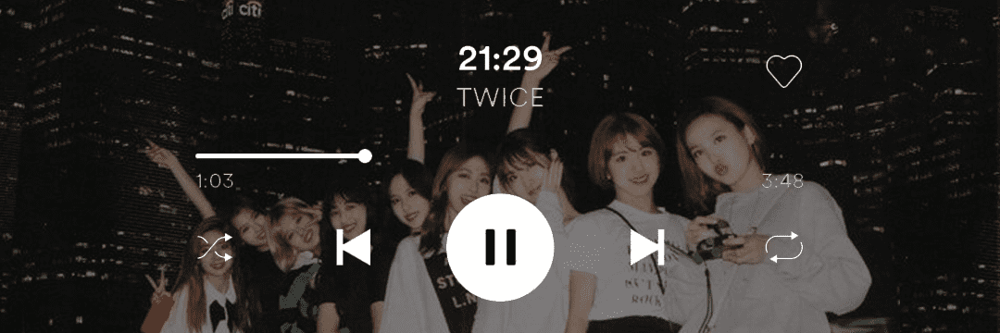
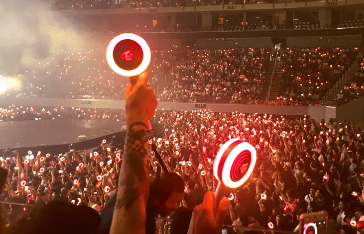
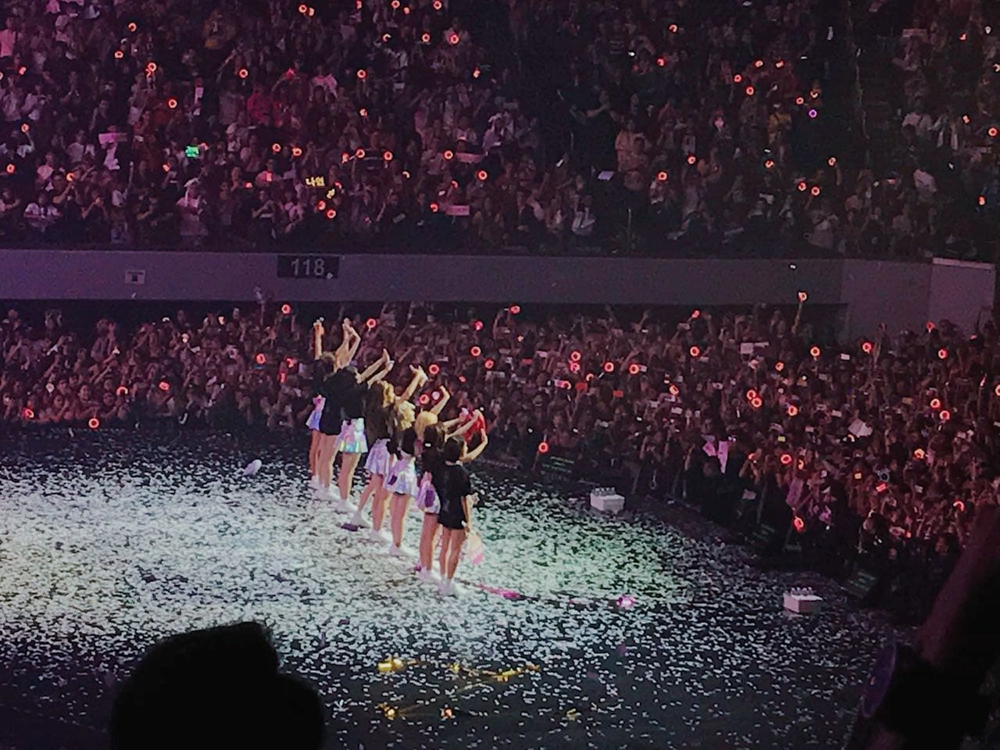
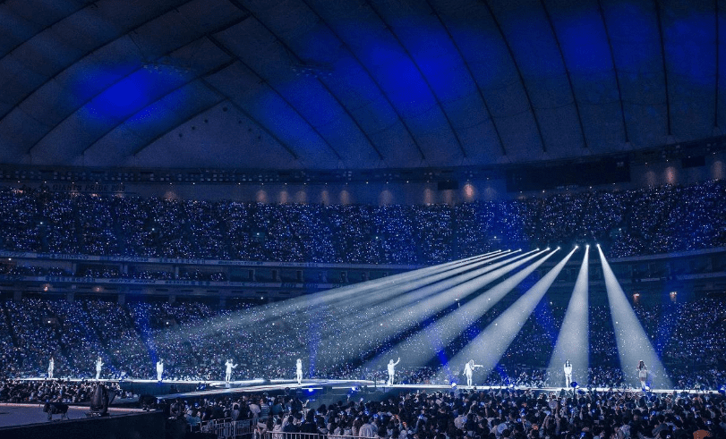

Fandom

El significado de "TWICE" es "Dos Veces" a lo que se refiere que este gran grupo de 9 chicas llenas de potencial te conquistará 2 veces, la primera por los oídos con sus espectaculares voces y entonaciones y la segunda con su inigualable belleza que te deslumbrara. Y ONCE significa "una vez" por lo que ambos nombres quedan como anillo y aguja.
El fandom creó su fanchat para apoyar a las chicas, el mismo va desde la intengrante más grande a la mas chica, el siguiente es así:
| EDAD | FANCHAT |
|---|---|
| 26 años | Im Nayeon |
| 25 años | Yoo Jeongyeong | 25 años | Momo Jjang |
| 25 años | Sana Jjang |
| 24 años | Park Jihyo |
| 24 años | Mina Jjang |
| 23 años | Kim Dahyun |
| 22 años | Son Chaeyoung |
| 22 años | Chou Tzuyu |
  